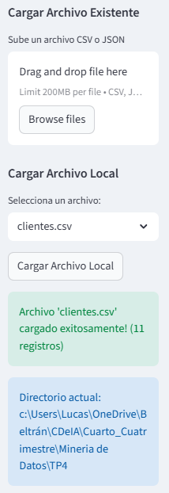
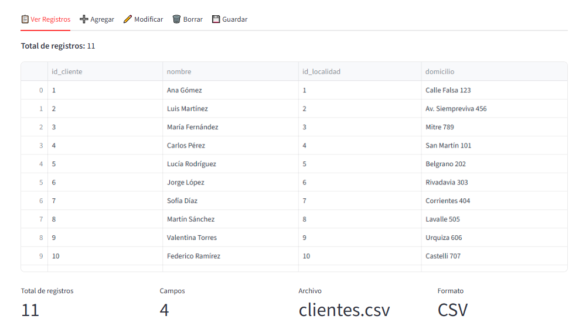
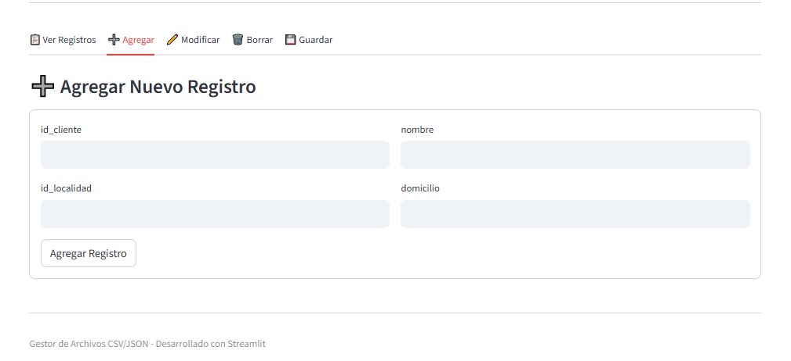
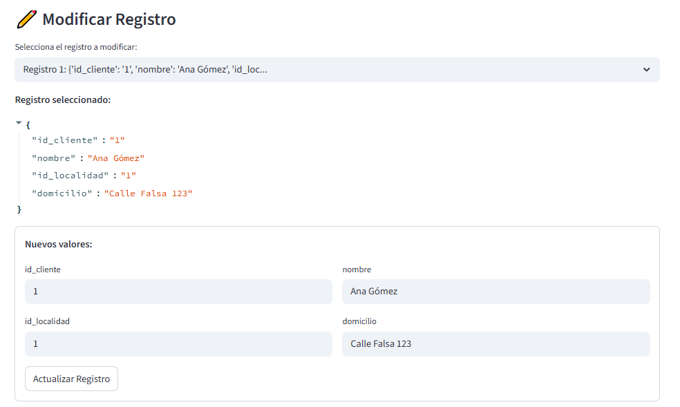
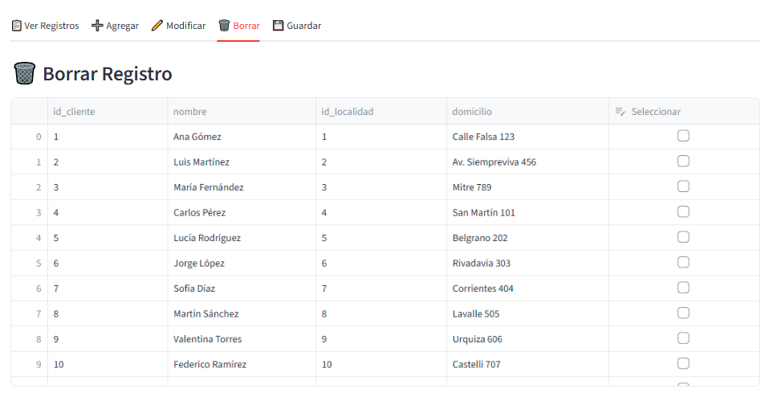
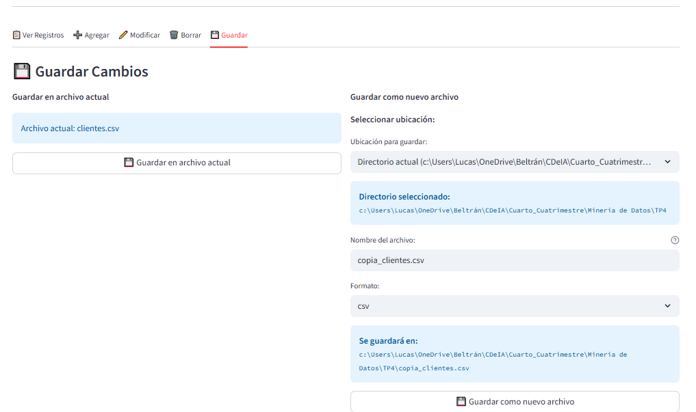

1. Introducción
Este trabajo práctico se centra en el desarrollo de una aplicación web interactiva utilizando Streamlit para la gestión de archivos CSV y JSON. La aplicación permite cargar, visualizar, modificar y guardar datos en estos formatos, proporcionando una interfaz intuitiva para el manejo de datos estructurados. El objetivo es crear una herramienta versátil que facilite la manipulación de datos en entornos de análisis de datos y ciencia de datos.
2. Descripción del Problema
El problema consiste en desarrollar una aplicación que permita gestionar archivos de datos en formatos CSV y JSON de manera eficiente. Los usuarios necesitan poder cargar archivos existentes, crear nuevos archivos, visualizar datos en formato tabular, agregar nuevos registros, modificar registros existentes, eliminar registros y guardar los cambios. La aplicación debe ser intuitiva y manejar errores de manera apropiada.
2.1 Funcionalidades Requeridas
- Carga de archivos: Soporte para archivos CSV y JSON, tanto subidos como locales
- Visualización de datos: Presentación de datos en formato tabular con métricas
- Gestión de registros: Agregar, modificar y eliminar registros
- Guardado de cambios: Guardar en archivo actual o crear nuevos archivos
- Interfaz intuitiva: Diseño responsive con navegación por pestañas
3. Implementación del Sistema
3.1 Arquitectura General
La aplicación está construida con Streamlit y utiliza un sistema de estado de sesión para mantener los datos cargados. Se divide en módulos funcionales que manejan diferentes aspectos de la gestión de archivos.
3.2 Configuración de la Página
st.set_page_config(
page_title="Gestor de Archivos CSV/JSON",
page_icon="📊",
layout="wide"
)3.3 Gestión de Estado
Se utiliza el estado de sesión de Streamlit para mantener la información del archivo actual, datos cargados, campos y formato.
if 'archivo_actual' not in st.session_state:
st.session_state.archivo_actual = None
if 'datos' not in st.session_state:
st.session_state.datos = []
if 'campos' not in st.session_state:
st.session_state.campos = []
if 'formato_actual' not in st.session_state:
st.session_state.formato_actual = None3.4 Funciones de Carga de Archivos
La función cargar_archivo() maneja tanto archivos subidos como archivos locales, determinando el formato automáticamente y cargando los datos usando funciones auxiliares.
def cargar_archivo(uploaded_file=None, nombre_archivo=None):
try:
if uploaded_file is not None:
formato = determinar_formato(uploaded_file.name)
nombre = uploaded_file.name
# Guardar como archivo local y cargar datos
elif nombre_archivo:
# Verificar existencia y cargar archivo local3.5 Visualización de Datos
La función mostrar_registros() presenta los datos en una tabla interactiva con métricas adicionales.
def mostrar_registros():
if not st.session_state.datos:
st.info("No hay registros para mostrar")
return
df = pd.DataFrame(st.session_state.datos)
st.write(f"**Total de registros:** {len(st.session_state.datos)}")
st.dataframe(df, use_container_width=True)3.6 Gestión de Registros
Se implementan funciones separadas para agregar, modificar y borrar registros, cada una con su interfaz correspondiente.
3.6.1 Agregar Registros
def agregar_registro_interfaz():
with st.form("form_agregar_registro"):
registro = {}
for campo in st.session_state.campos:
registro[campo] = st.text_input(f"{campo}")
if st.form_submit_button("Agregar Registro"):
# Validar y agregar registro3.6.2 Modificar Registros
def modificar_registro_interfaz():
opciones = [f"Registro {i+1}" for i in range(len(st.session_state.datos))]
registro_seleccionado = st.selectbox("Selecciona el registro:", opciones)
# Formulario para modificación3.6.3 Borrar Registros
def borrar_registro_interfaz():
df = pd.DataFrame(st.session_state.datos)
edited_df = st.data_editor(df, column_config={"Seleccionar": st.column_config.CheckboxColumn()})
# Procesar registros seleccionados3.7 Sistema de Guardado
El sistema permite guardar cambios en el archivo actual o crear nuevos archivos en diferentes ubicaciones.
def guardar_cambios_interfaz():
col1, col2 = st.columns(2)
with col1:
if st.button("Guardar en archivo actual"):
guardar_archivo_actual()
with col2:
# Interfaz para guardar como nuevo archivo3.8 Interfaz de Usuario
La interfaz principal utiliza un diseño de sidebar para la gestión de archivos y pestañas para las diferentes operaciones.
tab1, tab2, tab3, tab4, tab5 = st.tabs([
"📋 Ver Registros",
"➕ Agregar",
"✏️ Modificar",
"🗑️ Borrar",
"💾 Guardar"
])4. Resultados y Funcionalidades
4.1 Pantalla de Bienvenida
La aplicación muestra una pantalla de bienvenida cuando no hay archivo cargado, explicando las funcionalidades disponibles.

4.2 Carga de Archivos
Interfaz en la sidebar que permite subir archivos o seleccionar archivos locales disponibles.
4.3 Visualización de Datos
Presentación de datos en formato tabular con métricas de resumen.
4.4 Gestión de Registros
Interfaz para agregar nuevos registros con formulario estructurado.
4.5 Modificación de Registros
Selección y modificación de registros existentes.
4.6 Eliminación de Registros
Selección múltiple de registros para eliminación con confirmación.
4.7 Guardado de Cambios
Opciones para guardar en archivo actual o crear nuevos archivos en diferentes ubicaciones.
5. Conclusión
La aplicación desarrollada proporciona una solución completa para la gestión de archivos CSV y JSON, ofreciendo una interfaz web intuitiva y funcional. La implementación con Streamlit permite una rápida prototipación y despliegue, mientras que el manejo adecuado del estado de sesión garantiza una experiencia de usuario fluida. Las funcionalidades implementadas cubren todas las necesidades básicas de gestión de datos estructurados, desde la carga inicial hasta el guardado de modificaciones.
El código está bien estructurado con funciones modulares que facilitan el mantenimiento y la extensión futura. La separación de responsabilidades entre la lógica de negocio y la interfaz de usuario mejora la legibilidad y mantenibilidad del código. Esta herramienta puede ser utilizada en diversos contextos de análisis de datos donde se requiere manipulación interactiva de archivos estructurados.